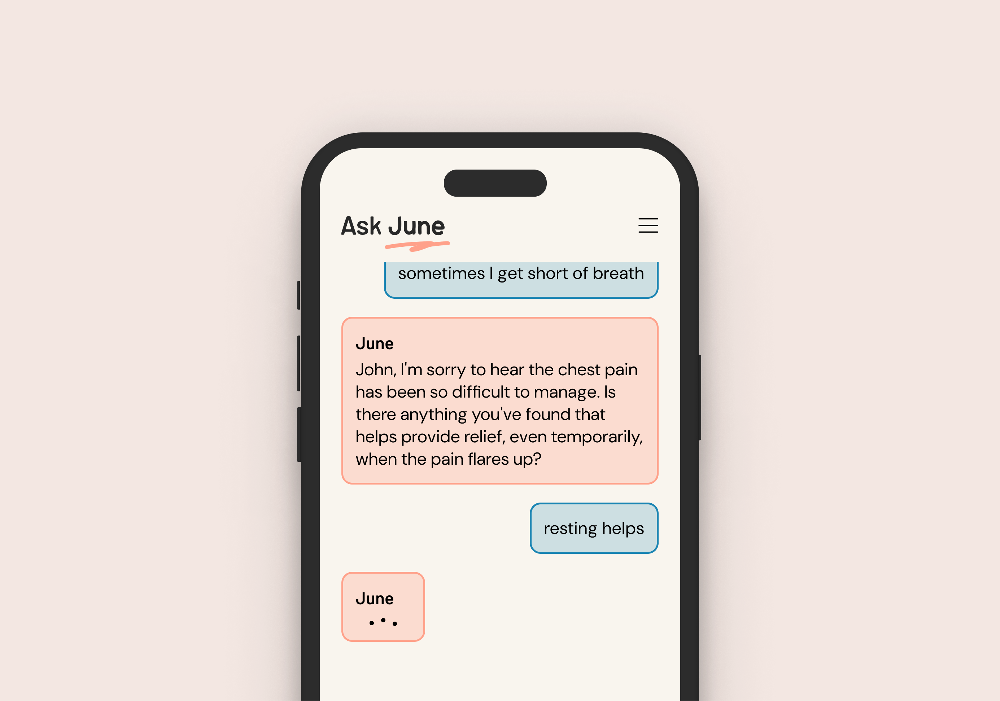
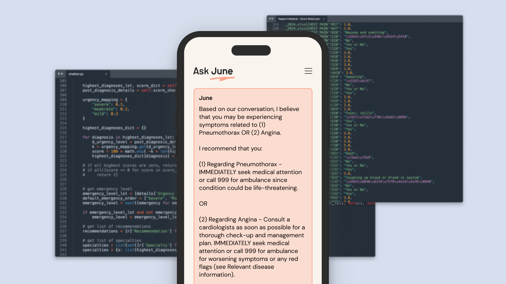

Meet our AI Medical Assistant
Created by doctors, Built by data scientists, and Trusted by Patients



Accurate Doctor-Patient Matching & Streamlined Clinical Flow+
- AI powered recommendations and doctor matching based on patients' specific needs
- Seamless integration with online booking (or other CRM / ERP) systems
- Streamlined clinical flow from booking, pre-diagnostic evaluation, check-in and consultation
Conversational Medical Assistant, Powered by Intelligence+
- Advanced Large Language Model (LLM) capable of conversing fluently in the local languages (including Cantonese slangs), allowing patients to freely express their medical concerns
- Trained by doctors to interpret medical context from layman conversations and detect medical issues for further analysis
- Ability to explain and elaborate any unfamiliar medical terms or concepts
- Ability to respond to patient input in real time and ask thoughtful follow-up questions to hone in on specific symptoms
Clinically Trained Diagnostic & Recommendation System+
- Intricately designed diagnostic algorithm considers a matrix of possible diagnoses against the patient's symptoms
- Mimics the nuanced thought process of an experienced human doctor
- Intelligently accounts for how the same symptom can carry differing significance under different scenarios
- Balances factors of accuracy, urgency, risk and utility
Personalised Recommendations and Evaluation Reports+
- Tailored and personalised reports for both healthcare providers and patients
- For Patients:
- Personalised recommendations on next steps and self-care tips
- Assessment of symptom severity and potential relevant conditions
- Encouraging early detection and seeking of medical attention
- For Providers:
- Evaluation summary reports for easy doctor hand-over pre-consultation
- Less time spent on basic medical history and note taking; and more time on in-depth consultation and examination
- Highlighting relevant differential diagnoses considered and disease information for intelligent point-of-care support for doctors